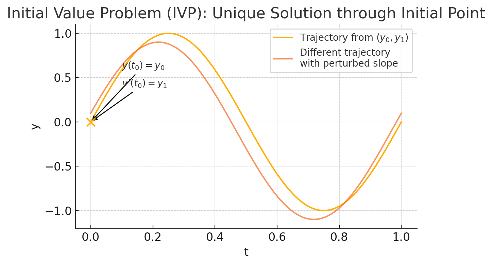
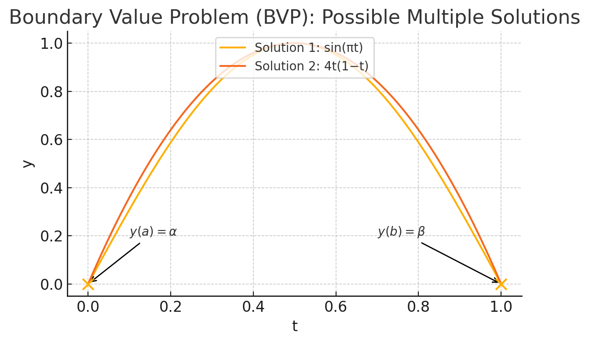
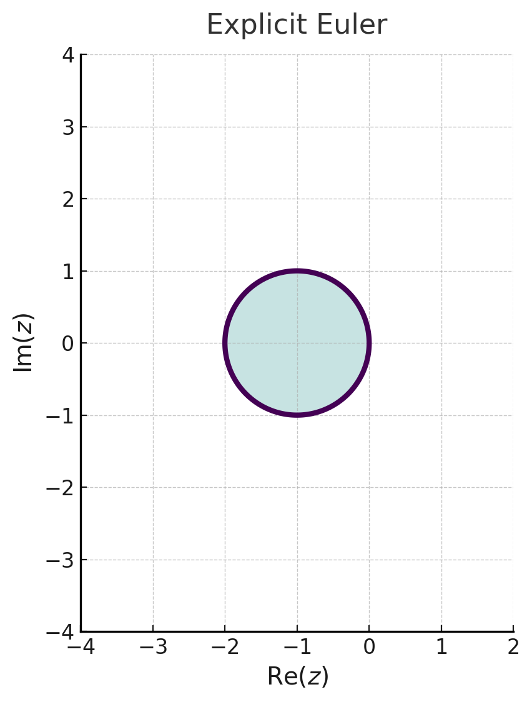
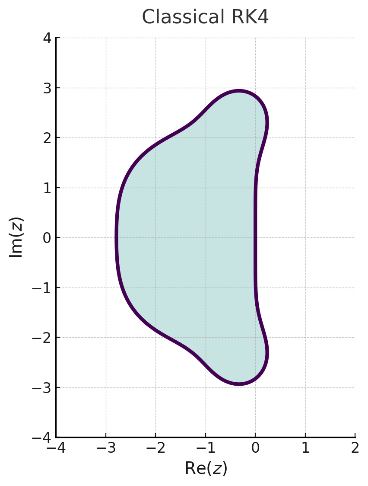
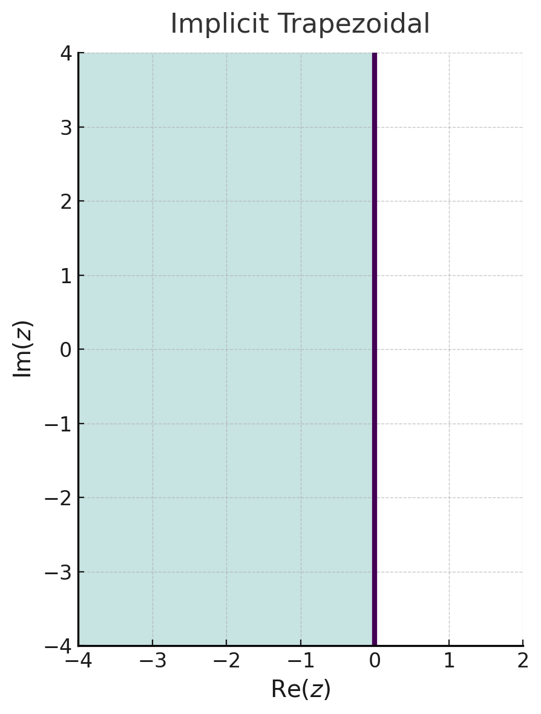

An ordinary differential equation (ODE) of order
where
where the coefficients
In an initial value problem (IVP) one prescribes
and seeks
for a second‐order ODE. Unlike IVPs, BVPs may admit multiple solutions or none at all, and typically require shooting or collocation methods for numerical solution.


Theorem (Picard–Lindelöf).
Let
has a unique solution on
Proof.
Fix
Define the complete metric space
with the norm
Then
Moreover, if
whence
Thus
so
implies
Consider the IVP
where
Starting from the integral form
one replaces the integrand by its left‐endpoint value
for some
Under a Lipschitz bound
so that
A discrete Grönwall argument then gives
showing first‐order convergence: halving
so
def euler(f, t0, y0, h, n):
ts = [t0]
ys = [y0]
t = t0
y = y0
for _ in range(n):
y = y + h * f(t, y)
t = t + h
ts.append(t)
ys.append(y)
return ts, ys
Starting with the IVP
and step size
The first Euler update gives
This yields the approximation at
and substitute into the recurrence:
so at
and compute
giving
Heun’s method, also known as the improved Euler or explicit trapezoidal rule, is a two-stage Runge–Kutta scheme of order two for the IVP
On a uniform grid
and then averages the slopes to obtain the corrector
Equivalently, it applies the trapezoidal rule to
by approximating
so that the method achieves global accuracy
Assuming a Lipschitz bound
confirming second-order convergence. For the linear test equation
so stability requires
def heun(f, t0, y0, h, n):
ts = [t0]
ys = [y0]
t = t0
y = y0
for _ in range(n):
k1 = f(t, y)
y_pred = y + h * k1
t_next = t + h
k2 = f(t_next, y_pred)
y = y + (h/2) * (k1 + k2)
t = t_next
ts.append(t)
ys.append(y)
return ts, ys
Starting with the IVP
and step size
At
so the predictor is
We then evaluate
and apply the corrector:
Thus at
Next, at
so
Then
and
At
Runge–Kutta (RK) methods form a broad class of one‐step integrators for the IVP
characterized by an
followed by
The coefficients
Consistency requires
The order
that must match the Taylor expansion of the exact flow up to
while order 4 involves additional trees of order 3 and 4. The number of independent conditions grows rapidly, so practical RK methods balance stage count
Stability for a linear test equation
where
def runge_kutta(f, t0, y0, h, n, A, b, c):
ts = [t0]
ys = [y0]
t = t0
y = y0
s = len(b)
for _ in range(n):
ks = [0]*s
for i in range(s):
ti = t + c[i]*h
yi = y + h*sum(A[i][j]*ks[j] for j in range(s))
ks[i] = f(ti, yi)
y = y + h*sum(b[i]*ks[i] for i in range(s))
t = t + h
ts.append(t)
ys.append(y)
return ts, ys
Consider the IVP
and a uniform step-size
and sets
In Butcher tableau form, the coefficients are
which exactly encodes the convex combination of stage slopes. The method requires four evaluations of
where
RK4 satisfies the elementary order conditions for all rooted trees of order
and hence its global error is
Applying RK4 to the linear test equation
so the method is stable for those
def rk4(f, t0, y0, h, n):
ts = [t0]
ys = [y0]
t = t0
y = y0
for _ in range(n):
k1 = f(t, y)
k2 = f(t + h/2, y + h/2 * k1)
k3 = f(t + h/2, y + h/2 * k2)
k4 = f(t + h, y + h * k3)
y = y + h/6 * (k1 + 2*k2 + 2*k3 + k4)
t = t + h
ts.append(t)
ys.append(y)
return ts, ys
Adams–Bashforth methods are a family of explicit linear multistep integrators for the IVP
that advance the solution using a weighted combination of past slope evaluations. By interpolating
An
where the coefficients
For example, the two-step (
giving
which is second‐order accurate. In general, a
To start the multistep procedure one typically uses a one‐step method (e.g.\ RK4) for the first
As explicit methods, Adams–Bashforth schemes are conditionally stable: when applied to the test equation
with
The region of absolute stability is the set of
def adams_bashforth(f, t0, y0, h, n, k):
coeffs = {
1: [1],
2: [3/2, -1/2],
3: [23/12, -16/12, 5/12],
4: [55/24, -59/24, 37/24, -9/24]
}
ts = [t0]
ys = [y0]
t = t0
y = y0
def rk4_step(t, y):
k1 = f(t, y)
k2 = f(t + h/2, y + h/2*k1)
k3 = f(t + h/2, y + h/2*k2)
k4 = f(t + h, y + h*k3)
return y + h/6*(k1 + 2*k2 + 2*k3 + k4)
for i in range(1, k):
y = rk4_step(t, y)
t += h
ts.append(t)
ys.append(y)
fs = [f(ts[i], ys[i]) for i in range(len(ys))]
for _ in range(k, n+1):
t += h
s = sum(coeffs[k][j] * fs[-1-j] for j in range(k))
y = y + h * s
ts.append(t)
ys.append(y)
fs.append(f(t, y))
return ts, ys
Starting with the IVP
and step size
computed previously (e.g.\ via RK4 and Heun’s method). We set
First compute the slopes at the last three points:
For the three‐step Adams–Bashforth method (
At
Next we need
Now to advance to
A
by fitting the degree-
where
ensuring exactness for all polynomials of degree
The simplest case (
which is second‐order and A‐stable.
Because
(e.g.\ by fixed‐point or Newton iteration). The linear stability function for the test equation
and the method’s region
def adams_moulton(f, t0, y0, h, n, k):
am_coeffs = {
1: [0.5, 0.5],
2: [5/12, 2/3, -1/12],
3: [3/8, 19/24, -5/24, 1/24],
4: [251/720, 646/720, -264/720, 106/720, -19/720]
}
ab_coeffs = {
1: [1],
2: [3/2, -1/2],
3: [23/12, -16/12, 5/12],
4: [55/24, -59/24, 37/24, -9/24]
}
ts = [t0]
ys = [y0]
t = t0
y = y0
def rk4_step(t, y):
k1 = f(t, y)
k2 = f(t + h/2, y + h/2*k1)
k3 = f(t + h/2, y + h/2*k2)
k4 = f(t + h, y + h*k3)
return y + h/6*(k1 + 2*k2 + 2*k3 + k4)
for _ in range(1, k):
y = rk4_step(t, y)
t += h
ts.append(t); ys.append(y)
fs = [f(ts[i], ys[i]) for i in range(len(ys))]
for _ in range(k, n+1):
s_ab = sum(ab_coeffs[k][j]*fs[-1-j] for j in range(k))
y_pred = y + h*s_ab
t_next = t + h
f_pred = f(t_next, y_pred)
s_am = am_coeffs[k][0]*f_pred + sum(am_coeffs[k][j]*fs[-j] for j in range(1, k+1))
y = y + h*s_am
t = t_next
ts.append(t); ys.append(y)
fs.append(f(t, y))
return ts, ys
Starting with the IVP
and step size
with slopes
The two-step Adams–Moulton formula (
which is implicit because
so the update reads
Distribute and collect the
To advance to
Thus the two-step Adams–Moulton method yields
Nyström methods are one‐step integrators for second‐order equations of the form
that avoid rewriting as a first‐order system. By directly incorporating the second derivative, they achieve high order with fewer function evaluations than general Runge–Kutta schemes.
An
and then updating
The coefficients
so that constant and linear solutions in
A Nyström method attains order
against the method’s update. For example, the classical 4th‐order Nyström with
which yields global error
In the context of a one‐step method applied to the IVP
the local truncation error (LTE)
so that
where
so the global error order is one less than the local.
The relationship between LTE and GE arises through error propagation. Writing the error recurrence
and using a Lipschitz bound
which telescopes to
A numerical method for the IVP
is said to be consistent of order
where
one checks that
so that constant and linear functions are integrated exactly; higher‐order consistency conditions involve matching higher Taylor coefficients.
A method is zero‐stable (for multistep) or A‐stable (for one‐step) if small perturbations—due to round‐off or data—do not grow uncontrollably under repeated application of the update. Concretely, a linear multistep method is zero‐stable if the roots of its characteristic polynomial
lie in or on the unit circle, with any on‐circle roots simple. For one‐step Runge–Kutta methods, A‐stability means the stability function
The Dahlquist Equivalence Theorem (for linear multistep) states that consistency plus zero‐stability implies convergence: the global error
In other words, reproducing the differential equation at each step (consistency) and preventing error amplification (stability) guarantee that the numerical solution approaches the true solution as
In practice, making sure both properties guides method selection: high‐order but unstable schemes fail, while stable but low‐order schemes converge slowly. The interplay of consistency, stability, and convergence underlies the design of integrators for non‐stiff and stiff ODEs alike.
Theorem (Lax Equivalence).
Let a linear initial-value problem be discretized by a consistent finite-difference scheme. Then stability of the scheme is necessary and sufficient for convergence: a consistent linear scheme converges if and only if it is stable.
Proof.
Let the continuous problem be
where
satisfies
(Necessity.) Assume the scheme converges:
Unrolling gives
Since
(Sufficiency.) Assume consistency and stability. Define the global error
Taking norms and using stability,
Since the scheme is consistent, for each fixed
Absolute stability concerns the behavior of a numerical method when applied to the linear test equation
and measures whether the discrete solution decays in time for any step‐size
then the method is absolutely stable for a given
The region of absolute stability is the set
and it plays a central role in step‐size selection and stiffness handling.
By design, an explicit Euler method has
so its stability region is the disk
which excludes much of the left half‐plane. Higher‐order explicit Runge–Kutta methods likewise yield polynomials in
produce
and in fact satisfy
A method is A‐stable if its stability region contains the entire left half‐plane:
No explicit linear multistep or explicit Runge–Kutta method can be A‐stable beyond first order, and no implicit linear multistep method can be A‐stable beyond second order (Dahlquist barriers). L‐stability strengthens A‐stability by requiring
so that very stiff modes are strongly damped rather than merely bounded. In practice, one chooses an A‐stable or L‐stable integrator when



An ODE (or system)
is called stiff if it exhibits widely separated time scales, so that certain components decay (or evolve) much faster than others. A quantitative measure for a linear constant‐coefficient system
is the stiffness ratio
where
stiffness manifests as the necessity to choose
In all these cases stiffness compels the use of implicit or specially tailored integrators—A‐stable, L‐stable, or diagonally implicit Runge–Kutta methods—to efficiently traverse the slow manifold without being hampered by the fast transient modes.
Backward Differentiation Formulas (BDF), often called Gear’s methods, are implicit linear multistep integrators especially well suited for stiff IVPs
A
On a uniform grid
where the coefficients
and
BDF methods are A-stable up to
with
import math
def gear_bdf(f, t0, y0, h, n, k, tol=1e-8, maxiter=10):
alphas = {
1: [1.0, -1.0],
2: [1.5, -2.0, 0.5],
3: [11/6, -3.0, 1.5, -1/3],
4: [25/12, -4.0, 3.0, -4/3, 0.25]
}
alpha = alphas[k]
beta = alpha[0]
ts = [t0]
ys = [y0]
for step in range(n):
t_next = ts[-1] + h
# initial guess: last value
y = ys[-1]
# Newton iteration
for _ in range(maxiter):
# compute F(y)
F = alpha[0]*y
for j in range(1, k+1):
y_prev = ys[-j]
F += alpha[j] * y_prev
F -= h*beta*f(t_next, y)
# approximate derivative dF/dy
eps = math.sqrt(tol) * (1 + abs(y))
f1 = f(t_next, y + eps)
f0 = f(t_next, y - eps)
dfdy = (f1 - f0) / (2*eps)
dFdy = alpha[0] - h*beta*dfdy
# Newton update
y_new = y - F/dFdy
if abs(y_new - y) < tol:
y = y_new
break
y = y_new
ys.append(y)
ts.append(t_next)
return ts, ys
Starting with the IVP
and step size
and compute the corresponding slopes
The two‐step BDF (BDF2) formula is
which for
Substituting
so that
Thus
To advance to
Substituting
Hence by BDF2 we obtain
When faced with
it is advantageous to bundle them into the single vector equation
where
This vector form offers several benefits:
Unified existence/uniqueness. If
has a unique local solution by Picard–Lindelöf.
Reduction of higher‐order ODEs. An
is converted to a first‐order system of size
and setting
Example vectorization:
def rk4_vector(f, t0, y0, h, n):
ts = [t0]
ys = [y0[:]]
t = t0
y = y0[:]
for _ in range(n):
k1 = f(t, y)
y_temp = [yi + h/2 * k1i for yi, k1i in zip(y, k1)]
k2 = f(t + h/2, y_temp)
y_temp = [yi + h/2 * k2i for yi, k2i in zip(y, k2)]
k3 = f(t + h/2, y_temp)
y_temp = [yi + h * k3i for yi, k3i in zip(y, k3)]
k4 = f(t + h, y_temp)
y = [
yi + h/6 * (k1i + 2*k2i + 2*k3i + k4i)
for yi, k1i, k2i, k3i, k4i in zip(y, k1, k2, k3, k4)
]
t += h
ts.append(t)
ys.append(y[:])
return ts, ys
In implicit one‐step or multistep schemes—such as backward Euler, implicit Runge–Kutta, or Adams–Moulton—the update at each step requires solving a nonlinear system
where
and solves the Jacobian system
The key object is the Jacobian matrix of the right‐hand side,
For backward Euler (
In an
a dense
Sparse matrices arise when most entries of a large
A sparse matrix stores only its nonzero entries. In the Compressed Sparse Row (CSR) format one keeps arrays
The sparsity pattern corresponds to the adjacency graph
Direct methods perform an
while controlling fill‐in via chosen pivot order. On a 2D grid with
Iterative methods build a sequence
where
Preconditioning replaces
Here's an example implementation:
class CSRMatrix:
def __init__(self, n, row_ptr, col_idx, values):
self.n = n
self.row_ptr = row_ptr # length n+1
self.col_idx = col_idx # length nnz
self.values = values # length nnz
def matvec(self, x):
y = [0.0]*self.n
for i in range(self.n):
row_start = self.row_ptr[i]
row_end = self.row_ptr[i+1]
s = 0.0
for idx in range(row_start, row_end):
j = self.col_idx[idx]
s += self.values[idx] * x[j]
y[i] = s
return y
def dot(u, v):
return sum(ui*vi for ui,vi in zip(u,v))
def axpy(a, x, y):
return [a*xi + yi for xi, yi in zip(x, y)]
def cg(A: CSRMatrix, b, x0=None, tol=1e-8, maxiter=None):
n = A.n
x = x0[:] if x0 is not None else [0.0]*n
r = [bi - ai for bi, ai in zip(b, A.matvec(x))]
p = r[:]
rs_old = dot(r, r)
maxiter = maxiter or n
for _ in range(maxiter):
Ap = A.matvec(p)
alpha = rs_old / dot(p, Ap)
x = axpy(alpha, p, x)
r = axpy(-alpha, Ap, r)
rs_new = dot(r, r)
if rs_new < tol*tol:
break
beta = rs_new / rs_old
p = [ri + beta*pi for ri, pi in zip(r, p)]
rs_old = rs_new
return x
Starting with the SPD system
we store it in CSR format with
We take the initial guess
so the residual
Compute
for row 0 (
row 1 (
row 2 (
row 3 (
so
The step length is
We update
Next compute
so the new search direction is
Thus after one CG iteration we have
| Format | Data Structures | Use Cases | Complexity (Storage / Matvec) |
|---|---|---|---|
| COO | – row[nnz], col[nnz], val[nnz] |
Stores list of (i,j,A_{ij}) triplets. Simple to construct and append, but has no implicit ordering—requires sorting or hashing for efficient access. |
|
| CSR | – rowPtr[n+1], col[nnz], val[nnz] |
Compressed Sparse Row: for each row val[rowPtr[i]..rowPtr[i+1]) with matching columns in col. Excellent for row‐based matvec. |
|
| CSC | – colPtr[n+1], row[nnz], val[nnz] |
Compressed Sparse Column: transpose analogue of CSR. Ideal for column‐oriented operations (e.g.\ sparse‐least squares, column updates). | |
| DIA | – offsets[ndiag], data[ndiag][len] |
Diagonal (or banded) format: stores a fixed set of diagonals. Use when nonzeros lie on a few known diagonals (e.g.\ finite‐difference stencils). | |
| ELL | – indices[n][maxnz], data[n][maxnz] |
ELLPACK: each row padded to maxnz entries, with unused slots zero‐padded. Enables vectorized matvec (constant stride) but wastes storage if nnz per row varies. |
|
| BSR | – blockPtr[nblocks+1], blockCol[nblocks], blockVal[nblocks][b][b] |
Block Sparse Row: CSR applied at block level of size |
|
| HYB | – combination of ELL ⊕ COO | Hybrid (e.g.\ in NVIDIA’s cuSPARSE): store “regular” rows in ELL and leftover in COO. Balances vector efficiency with irregular sparsity. | sum of components |
| JDS | – perm[n], jdPtr[nnzPerRowMax], jdCol[nnz], jdVal[nnz] |
Jagged Diagonal Storage: rows sorted by decreasing nnz, then stored in diagonal‐like fashion. Improves load balance in vector matvec on SIMD architectures. |
The Laplace transform provides a bridge between time-domain differential equations and algebraic equations in the complex frequency variable
for values of
and the key property that turns differentiation into multiplication by
and so on for higher derivatives.
To solve a linear constant-coefficient initial-value problem
one takes the Laplace transform of both sides. The left side becomes a polynomial in
Since
where
Recovering
or more practically by partial-fraction expansion and known transform pairs. For example, if
one writes
and uses
An elegant feature of the Laplace approach is the convolution theorem: if
where
Starting with the IVP
take Laplace transforms. Let
we get
Combine terms:
so
Since
We seek a partial‐fraction decomposition
Multiply through by
Expand and collect like powers:
Hence
From
Inverting termwise using
gives
Numerical Laplace transforms seek to approximate either the forward transform
or its inverse
by replacing these integrals with finite sums. A common trick for the forward transform is to change variables
and then apply Gauss–Laguerre quadrature. If
This formula is spectrally accurate when
Inverting the Laplace transform numerically often relies on rewriting the Bromwich integral as a Fourier‐type integral. By shifting the contour to
which can be approximated by the trapezoidal rule on a finite interval
Choosing
A more sophisticated contour‐deformation approach is the Talbot method, which parametrizes a bent contour
and applies a simple trapezoidal rule in
With a well‐chosen
An alternative purely real‐axis inversion is the Gaver–Stehfest algorithm, which uses a finite difference representation of the inverse transform:
where the
In all these approaches, the accuracy depends critically on the analyticity and growth of
import math
import numpy as np
from numpy.polynomial.laguerre import laggauss
def laplace_forward_gl(f, s, N):
x, w = laggauss(N)
return (1.0/s) * sum(w[k] * f(x[k]/s) for k in range(N))
def laplace_inverse_trap(F, t, gamma, Omega, M):
dw = Omega / M
summ = 0+0j
for k in range(-M, M+1):
w = k * dw
summ += math.exp((gamma + 1j*w) * t) * F(gamma + 1j*w)
return math.exp(gamma*t) / (2*math.pi) * summ * dw
def laplace_inverse_talbot(F, t, N, gamma=0.0):
dt = 2*math.pi / N
summ = 0+0j
for k in range(1, N+1):
theta = -math.pi + k * dt
s = gamma + (theta/math.tan(theta) + 1j*theta) / t
ds = (1 - theta/math.sin(theta)**2 + 1j) / t * dt
summ += math.exp(s*t) * F(s) * ds
return summ / (2j*math.pi)
def stehfest_weights(N):
if N % 2 != 0:
raise ValueError("N must be even")
V = [0.0] * N
for k in range(1, N+1):
s = 0.0
for j in range(math.ceil(k/2), min(k, N//2)+1):
num = j**(N//2) * math.factorial(N//2)
den = math.factorial(j) * math.factorial(N//2 - j) * math.factorial(j-1) * math.factorial(k-j) * math.factorial(2*j-k)
s += num / den
V[k-1] = s * (-1)**(N//2 + k)
return V
def laplace_inverse_stehfest(F, t, N):
V = stehfest_weights(N)
ln2 = math.log(2)
total = 0.0
for k in range(1, N+1):
total += V[k-1] * F(k * ln2 / t)
return ln2 / t * total
First, recall that for the forward transform
we make the substitution
Using
we approximate
Since
Thus
and similarly
Adding gives
in exact agreement with the analytic result
Next, to invert via the trapezoidal rule on the Bromwich integral, write
Choose
We have
and
At
At
Numerically,
Then the sum in the trapezoidal rule is
Finally, multiply by the prefactor:
so
which is a reasonable approximation to the exact value